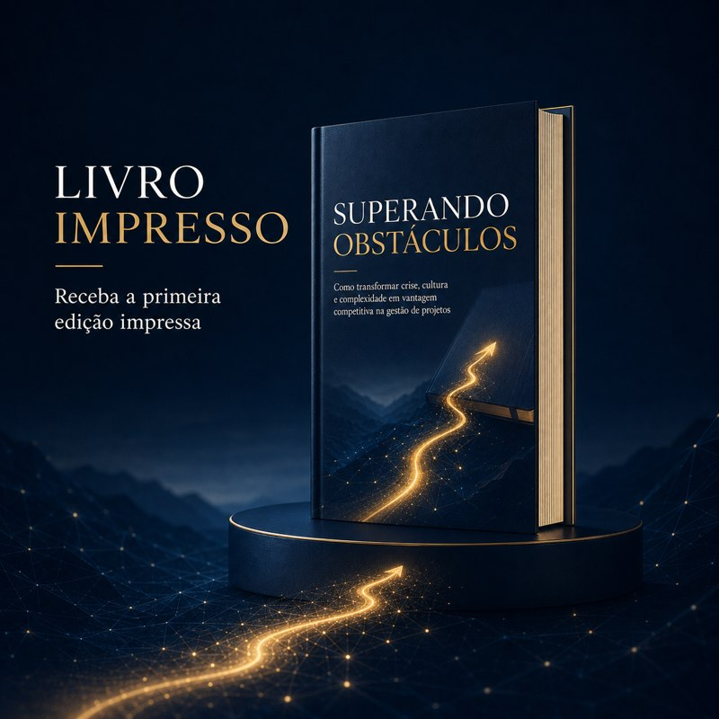
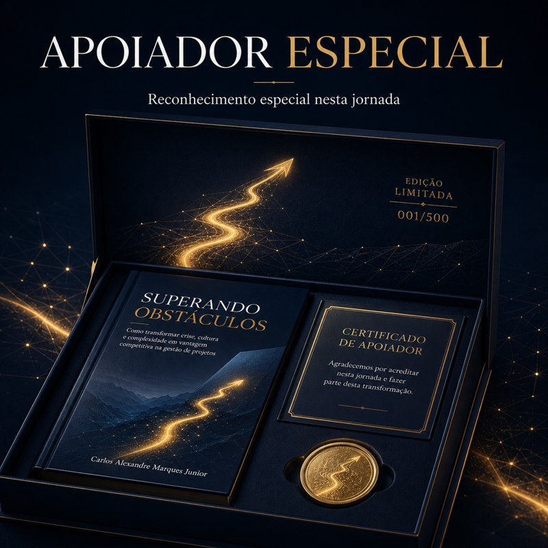

Portugal / Europa
PPL
Apoie a primeira edição em Portugal através da maior plataforma de financiamento coletivo portuguesa.
Apoiar pela PPLPrimeira Edição · Campanha de Lançamento
Projetos entram em crise. Liderança define como eles saem dela.
Manifesto
Projetos raramente fracassam exclusivamente por tecnologia, metodologia ou ferramentas.
Projetos entram em dificuldade quando decisões são adiadas, riscos são ignorados, a comunicação falha, as responsabilidades ficam difusas e a liderança perde capacidade de transformar complexidade em direção.
É nesse espaço — entre o plano e a realidade, entre o cronograma e a pressão do dia a dia — que se decide se um projeto se recupera ou se aprofunda em crise.
Superando Obstáculos é uma obra construída a partir de experiência prática e de reflexão sobre liderança e gestão de projetos.
Sobre o Livro
Ao longo de 24 capítulos, o livro utiliza situações e experiências profissionais reais como base para reflexão e aplicação prática em gestão de projetos.
Para Quem É
Gestão de projetos e entrega
Liderança e transformação
Faça Parte da Primeira Edição
A primeira edição está sendo viabilizada por meio de crowdfunding, com campanhas dedicadas em Portugal e no Brasil. Escolha a plataforma mais próxima de você.
Portugal / Europa
Apoie a primeira edição em Portugal através da maior plataforma de financiamento coletivo portuguesa.
Apoiar pela PPLBrasil
Apoie a primeira edição no Brasil através de uma das plataformas de financiamento coletivo mais conhecidas do país.
Apoiar pelo Catarse

Pesquisa e Publicação
Conteúdos relacionados ao projeto Superando Obstáculos também estão disponibilizados no Zenodo, repositório de acesso aberto para pesquisa científica, reforçando o compromisso com a disseminação de conhecimento em liderança e gestão de projetos.
DOI: 10.5281/zenodo.22035965
Conecte-se
Reflexões sobre liderança, projetos e a trajetória do livro.
Acompanhar no LinkedInConteúdo prático sobre gestão de projetos e agilidade no Instagram.
Seguir no Instagram+351 913 820 958 — dúvidas, parcerias ou imprensa.
Falar pelo WhatsApp+55 11 91094-0909 — dúvidas, parcerias ou imprensa.
Falar pelo WhatsAppCada apoio contribui diretamente para viabilizar a impressão, a distribuição e o alcance da obra — em Portugal, no Brasil e além.